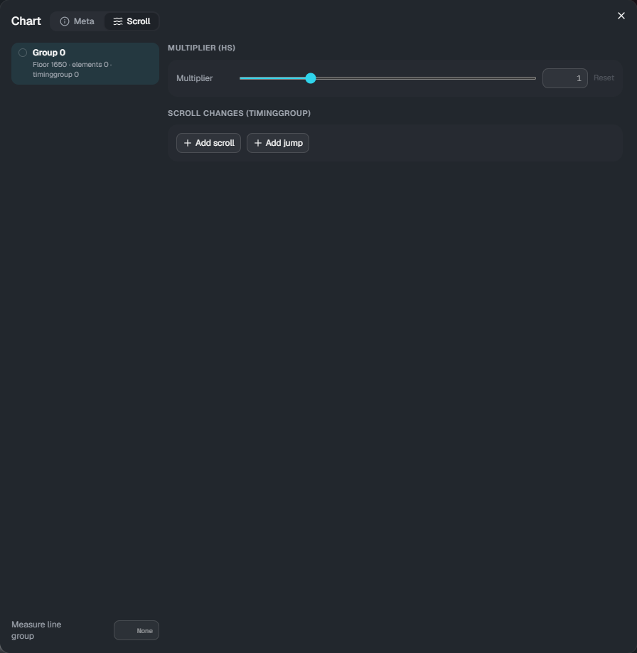

Scroll
Without any settings, floor notes flow according to the chart's scroll (scroll / jump in the chart editor's effects). The Scroll dialog lets you change this per note group. Judgement times do not change; only where the notes appear does.
Note groups are assigned with the note group feature in the chart editor. Notes without a group are in group 0.
Opening it
Click Scroll in the timeline's tool bar (it opens the Scroll tab of the same dialog as Meta).

- Left: the list of groups, with the number of floor notes, elements and timinggroup entries. Floor notes on the timeline are colored by group
- Right: settings of the selected group
- Measure line group: which group's speed the bar lines follow (empty means the chart's scroll)
Multiplier (hs)
Multiplies the speed of the group by a fixed rate for the whole song: 0.1 to 10, with 1 as the default (larger is faster). Reset sets it back to 1.
Scroll changes (timinggroup)
Speed changes for this group only.
- Add scroll: from that time, the speed becomes the value. If you fill in "Change over", it changes smoothly over that many beats following the ease; if empty, it changes instantly
- Add jump: at that time, notes skip ahead by the value (ms)
- Times are typed as bar:beat+fraction (for example
4:2+1/4)
Used together with the multiplier (hs), the multiplier also applies to these speeds.
Groups for air elements and traces
Air elements (AirTap, AirSlide, AirLift) and traces (Trace, Guide) follow the chart's scroll unless you specify a group. Enter a number in Group in Properties to make them follow that group's speed.